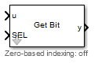
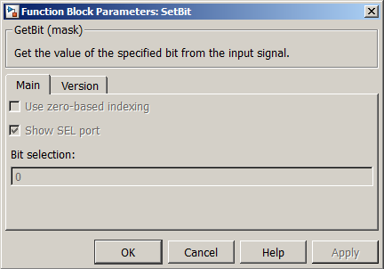

| MBDS Environment |
|
GetBit |
MATLAB Helpdesk |
General
Gets the values of specific bits from one decimal number..
Library
DescriptionMBDS Blockset

This block returns the values of specific bits of the decimal number obtained from the input port u. The output can be single value or vector depending on the input given through SEL input port. The input SEL can be a single value or a vector. It selects the bits used in this operation. A bit is selected by its position number from the less significant bit (position 0 or 1) to the most significant bit (7, 15, 31, 63 or 8, 16, 32, 64). The output values are the bits values (or single bit value) obtained from the input number.
Possibility to select between zero- or one-based indexing for SEL.
Using the parameter mask the block can be configured according to the users needs. Via register card Main the block input ports can be shown/hidden (see Figure 1).
- Use Zero-based indexing: If checked, the block provides an enable input port for the Zero-based bit indexing. If unchecked, the block provides for one-based indexing.
- Show SEL port. If checked, the bit selection can be obtained from the input port SEL or it can be obtained from the mask field Bit selection.
- Bit selection. Here the bit number of the manipulated bits can be specified by a scalar or by a vector.

Figure 1: Parameter Mask Dialog - Register card MainThe register card Version displays the block version information.
Inputs and Outputs
Example
Port I/O Data Type Description u In Any unsigned integer Input signal (scalar signals only) SEL In Any integer Scalar or array of bit positions y Out boolean Outputs scalar or array of bit values
Refer to the example.